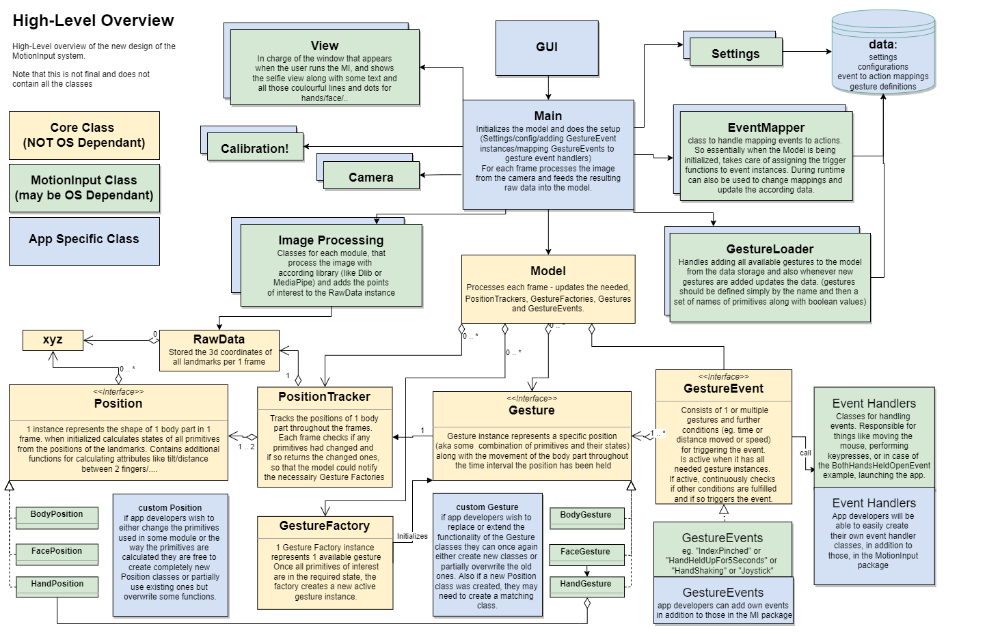

Setting Up
Expected to be run on Python 3.9 + Windows
Make sure you have installed all the libraries in the requirements.txt
As we don’t yet have the App layer and the app-specific main.py, we are using the test files to run the system, so either use one of them or create your own as needed.
Architecture

So a quick overview of how the the system works. It can be oberved in 2 parts: the setup and the frame by frame processing. ##setup
Firstly, information for gestures and events are loaded from the database (eventually)
The event mapper class is used to initialise the required event classes and add them to the model ##frame by frame
The opencv image is retrieved from the camera class, and using whichever imaging processing library required depending on the module, we detect all ‘landmarks’ from the image, retrieve their coordinates, and pass this information to the raw data class.
Process the frame in the Model in following steps:
Updates all position trackers with the RawData provided, which results in a set of primitives that had changed since the last frame.
Update all the gesture factories that use the changed primitives, which may create new active Gestures, and consequently (de)activation of some gesture events
Update all the active gestures, which may result in deactivation of some of them, and consequently (de)activation of some gesture events
Run all active gesture events, which may result in the trigger functions in the events being called.
Examples
Currently, the repo contains 2 files that are being used to test the system:
hand_test.py for testing the hand module
extremity_trigger_test.py Note: Currently, for the extremity triggers in the body module, hardcoded calibration information is located in the LoadConfig file. In particular, the coordinates of the extremity triggers are set manually.
Notes
Please do keep in mind that this architecture was done on a tight schedule by a smol 2nd year, so I am sure there are some parts of it that were not implemented in the most efficient manner. So if you have an idea of how to improve something let me know.
If there is some functionality missing from the core that you need, feel free to let me know. If it makes sense I will add it or make the needed changes.
If there are any primitives/gestures/events/event_handlers that you are missing feel free to add them in yourself (as in please do we really could use some help here:))
-xoxo Carmen
Adding Features
Adding events
Create a new class extending the GestureEvent class from the core module. (many examples are available in the gesture_events folder) You can check the currently available gestures in the GestureLoader class (script.gesture_loader.py) and in case the gestures you need are not available feel free to add a new gesture.
Adding Gestures
Adding new Gestures is as easy as adding one line to the script.gesture_loader.py file, with just the name of the gesture and a set of all the primitives it uses. (again plenty of examples already available) In case the primitives you need are not available feel free to add a new primitive.
Adding primitives
Now adding primitives is a bit trickier and definitely should not be done too often, as unlike Gestures and GestureEvents the primitives affect the efficiency of processing each frame, as for every frame we calculate the states of all the primitives. Adding primitives is done in the specific modules Position classes (so currently in the HandPosition and the BodyPosition classes)